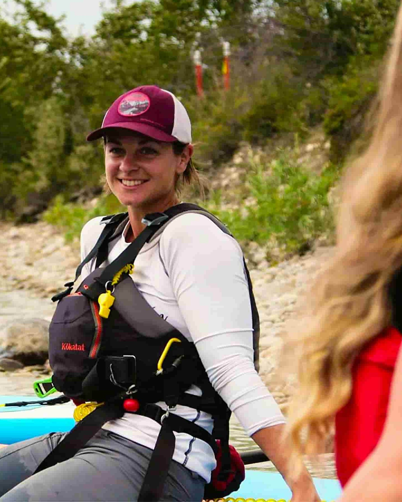

Our Mission
At White Water Rafting Co., our mission is to bring people closer to nature through thrilling, safe, and unforgettable river adventures. We believe in teamwork, courage, and creating memories that last a lifetime.
Our History
Founded in 1998, our company began with a single raft and a passion for the outdoors. Over the years, we have grown into one of the most trusted rafting outfitters in the region, guiding thousands of adventurers down some of the most beautiful rivers in the world.
Meet Our Guides
Our certified rafting guides are experts in river navigation, safety, and outdoor leadership. They are passionate about helping every guest feel confident and excited on the water.



Adventure Awaits